Chapter 5 Including clinical variables
5.1 Preparation of data
One of the important reasons of the Bayesian network analysis is assessing the relationship between gene expressions and clinical variables. CBNplot offers incorporating metadata into inference. As a demonstrative purpose, the enrichment analysis results from GSE133624 is applied on data from The Cancer Genome Atlas Program (TCGA) (Cancer Genome Atlas Research Network et al. 2013). Specifically, TCGA-BLCA data is downloaded by the useful library TCGAbiolinks (Colaprico et al. 2016).
library(TCGAbiolinks)
## Load dataset
load(file="tcgablcaData.rda")We filtered the metadata based on the variables to be included in the inference. In this analysis, age_at_diagnosis and paper_Combined T and LN category, which is a sum of Tumor stage T 1/2 (0) vs. 3/4 (1) and LN negative (0) vs positive (1), are included. We again applied VST on the data.
5.2 Inference of pathway relationship including clinical variables
We assess the relationship between the curated biological pathway information and clinical variables mentioned above. Variables other than expression data can be specified with otherVar, as well as otherVarName for their name. The order of otherVar must be same as column order of expression data. We use all the significant pathways of corrected p-values below 0.05.
bnCov <- bnpathplot(pway,
vstedTCGA,
nCategory = 1000,
adjpCutOff = 0.01,
expSample=rownames(metadata),
algo="hc", strType="normal",
otherVar=metadata,
otherVarName=c("Age", "Category"),
R=50, cl=parallel::makeCluster(10),
returnNet=T,
shadowText=T)
## Check DAG
igraph::is.dag(as.igraph(bnCov$av))FALSE [1] TRUE## Fit the parameter to network based on the data
bnFit <- bn.fit(bnCov$av, bnCov$df)Plot the resulting network.
bnCov$plot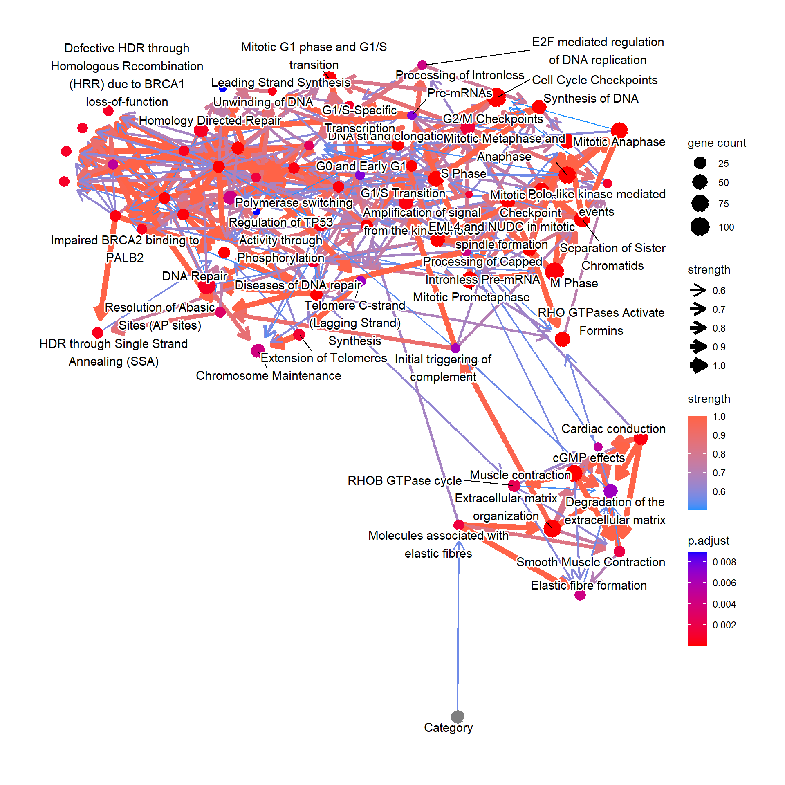
5.3 Conditional probability query
Next we perform conditional probability queries by the bnlearn function cpdist to elucidate how the clinical variables affect pathway regulation. First we fit the inferred network to the original data. These are stored in the named list. Logic sampling is performed unless otherwise stated.
Perform cpdist, and visualize the distribution of “Molecules associated with elastic fibres” conditional on the tumor category using ggdist.
library(bnlearn)
library(ggdist)
library(ggplot2)
candPath <- "Molecules associated with elastic fibres"
efz <- cpdist(bnFit, nodes=c(candPath), evidence=(Category==0))
efo <- cpdist(bnFit, nodes=c(candPath), evidence=(Category==1))
eft <- cpdist(bnFit, nodes=c(candPath), evidence=(Category==2))
effect = data.frame(
val = c(efz[,1], efo[,1], eft[,1]),
stage = c(rep("0",nrow(efz)), rep("1", nrow(efo)), rep("2", nrow(eft)))
)
disMean <- effect %>% group_by(stage) %>% summarise(mean=mean(val))
stageWMean <- paste0(disMean$stage, " (mean=", round(disMean$mean,3), ")")
effect$stageLabel <- c(rep(stageWMean[1],nrow(efz)), rep(stageWMean[2], nrow(efo)), rep(stageWMean[3], nrow(eft)))
ggplot(effect, aes(x=val, y=stage, color=stageLabel, fill=stageLabel)) +
scale_color_manual(values=c("steelblue","gold","tomato")) +
scale_fill_manual(values=c("steelblue","gold","tomato")) +
stat_dotsinterval() + theme_bw() + ggtitle(candPath)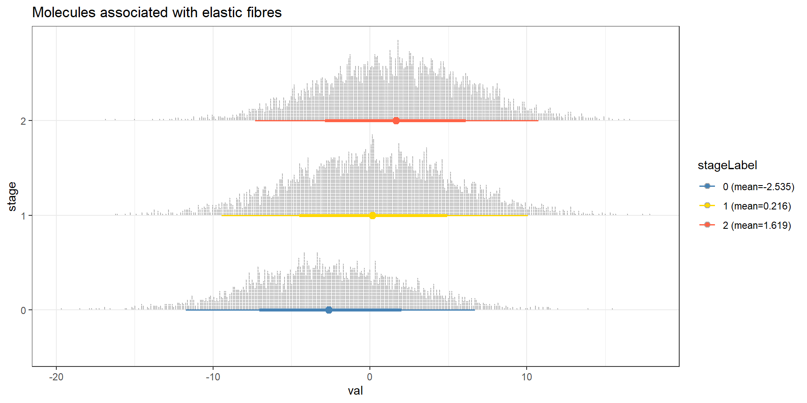
How the down-regulation in “Cell Cycle Checkpoints” affects the other pathways? This time using the importance sampling method, likelihood weighting.
predNodes <- names(bnFit)
predNodes <- predNodes[predNodes != "Cell Cycle Checkpoints"]
maxVal <- max(bnCov$df[candPath])
minVal <- min(bnCov$df[candPath])
lowCCC <- cpdist(bnFit, nodes=predNodes, evidence=list("Cell Cycle Checkpoints"=minVal), method="lw")
lowW <- attributes(lowCCC)$weights
highCCC <- cpdist(bnFit, nodes=predNodes, evidence=list("Cell Cycle Checkpoints"=maxVal), method="lw")
highW <- attributes(highCCC)$weights
## Remove the factor
highCCC$Category <- NULL
lowCCC$Category <- NULL
difMeanCCC <- apply(highCCC, 2, function(x) weighted.mean(x, highW)) - apply(lowCCC, 2, function(x) weighted.mean(x, lowW))
## Top absolute value
kable(head(difMeanCCC[order(abs(difMeanCCC), decreasing=TRUE)]), col.names=c("difference"))| difference | |
|---|---|
| M Phase | 23.15520 |
| Mitotic Prometaphase | 20.93115 |
| Mitotic Metaphase and Anaphase | 20.70000 |
| Mitotic Anaphase | 20.56985 |
| Separation of Sister Chromatids | 19.35587 |
| Resolution of Sister Chromatid Cohesion | 19.16356 |
## Reflect the difference in the plot modifying ggplot2 object
changeCol <- bnCov$plot$data
difMeanCCC <- difMeanCCC[changeCol$name]
names(difMeanCCC) <- changeCol$name
changeCol$color <- difMeanCCC
## Replace the color, change the legend
bnCov$plot$data <- changeCol
bnCov$plot + scale_color_continuous(low="blue",high="red",name="difference")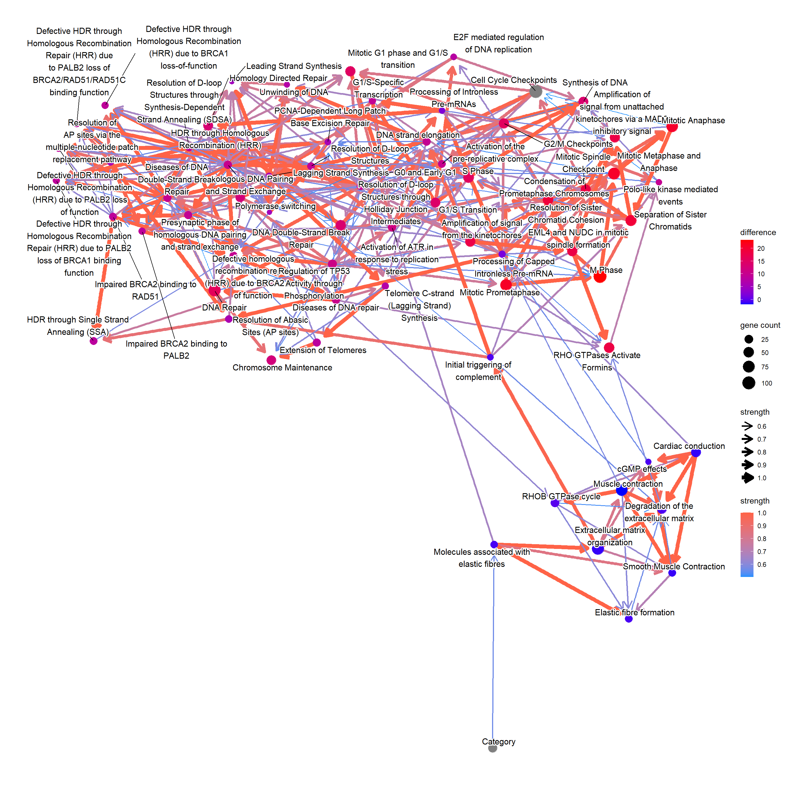
5.4 Gene relationship with variables
For the genes in interesting pathway, clinical variables can be incorporated too. We investigated the genes involved in the reactome “Molecules associated with elastic fibres”.
num <- which(pway@result$Description=="Molecules associated with elastic fibres")
bnGeneCov <- bngeneplot(pway,
vstedTCGA, pathNum=num,
expSample=rownames(metadata),
otherVar=metadata,
hub=5, R=100,
otherVarName=c("Age","Category"),
cl=parallel::makeCluster(10),
returnNet=T)Plot the resulting network of genes.
## Plot
bnGeneCov$plot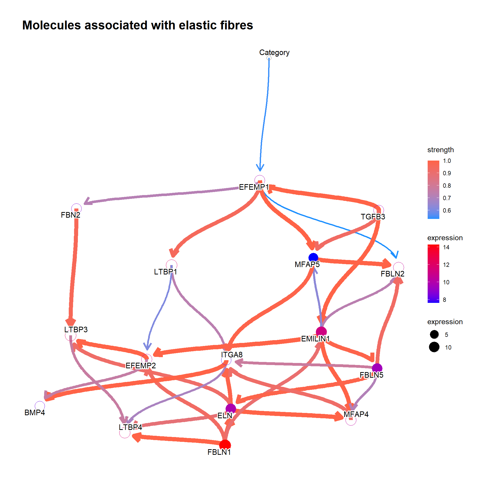
## Check DAG
igraph::is.dag(as.igraph(bnGeneCov$av))FALSE [1] TRUE## Fit the parameter to network based on the data
bnFitGene <- bn.fit(bnGeneCov$av, bnGeneCov$df)Perform cpdist, and examine the mean and distribution using ggdist. We can see that the expression of the gene EFEMP1, which is reported to be a candidate for a biomarker of aggressive bladder cancer or therapeutic targets (Han et al. 2017), is going up with each stage.
candGene <- "EFEMP1"
efz <- cpdist(bnFitGene, nodes=c(candGene), evidence=(Category==0))
efo <- cpdist(bnFitGene, nodes=c(candGene), evidence=(Category==1))
eft <- cpdist(bnFitGene, nodes=c(candGene), evidence=(Category==2))
effect = data.frame(
val = c(efz[,1], efo[,1], eft[,1]),
stage = c(rep("0",nrow(efz)), rep("1", nrow(efo)), rep("2", nrow(eft)))
)
disMean <- effect %>% group_by(stage) %>% summarise(mean=mean(val))
stageWMean <- paste0(disMean$stage, " (mean=", round(disMean$mean,3), ")")
effect$stageLabel <- c(rep(stageWMean[1],nrow(efz)), rep(stageWMean[2], nrow(efo)), rep(stageWMean[3], nrow(eft)))
ggplot(effect, aes(x=val, y=stage, color=stageLabel, fill=stageLabel)) +
scale_color_manual(values=c("steelblue","gold","tomato")) +
scale_fill_manual(values=c("steelblue","gold","tomato")) +
stat_dotsinterval() + theme_bw() + ggtitle(candGene)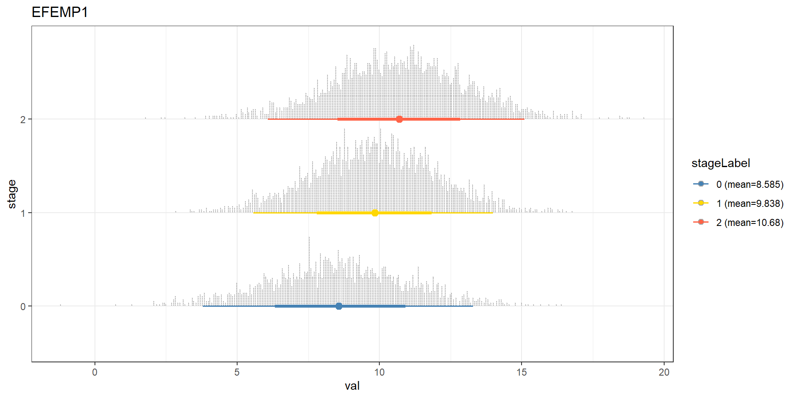
We can reflect the difference to the plot. In the previous EFEMP1 plot:
candGene <- names(bnFitGene)
candGene <- candGene[candGene != "Category"]
efz2 <- cpdist(bnFitGene, nodes=candGene, evidence=(Category==0))
eft2 <- cpdist(bnFitGene, nodes=candGene, evidence=(Category==2))
difMean <- apply(eft2, 2, mean) - apply(efz2, 2, mean)
changeCol <- bnGeneCov$plot$data
difMean <- difMean[changeCol$name]
names(difMean) <- changeCol$name
changeCol$color <- difMean
## Replace shape and color
changeCol$shape <- rep(19, dim(bnGeneCov$plot$data)[1])
bnGeneCov$plot$data <- changeCol
bnGeneCov$plot + scale_color_continuous(low="blue",high="red",name="difference")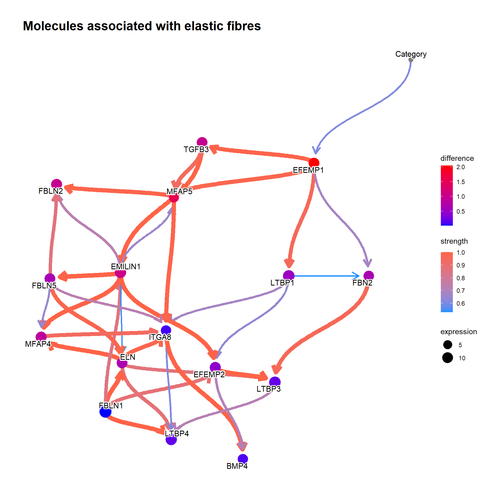
5.5 Confirming the existing knowledge
To confirm the validity of the inferred Bayesian network, we can focus on some genes that is already validated to be related to clinical information or is incorporated into the daily clinical practice. To obtain the pathways that include the specific gene, one can use obtainPath function. This time we focus on the gene MMP2, as the gene has been reported to be related to clinical variables in bladder cancer (Vasala, Pääkkö, and Turpeenniemi-Hujanen 2003; Fouad et al. 2019; Winerdal et al. 2018).
pathSub <- obtainPath(pway, "MMP2")Using the top pathway involving MMP2, construct the network and plot.
bnGeneCov2 <- bngeneplot(pathSub,
vstedTCGA, pathNum=1,
expSample=rownames(metadata),
otherVar=metadata,
hub=5, R=100, algo="hc",
otherVarName=c("Age","Category"),
cl=parallel::makeCluster(10),
returnNet=T)
bnGeneCov2$plot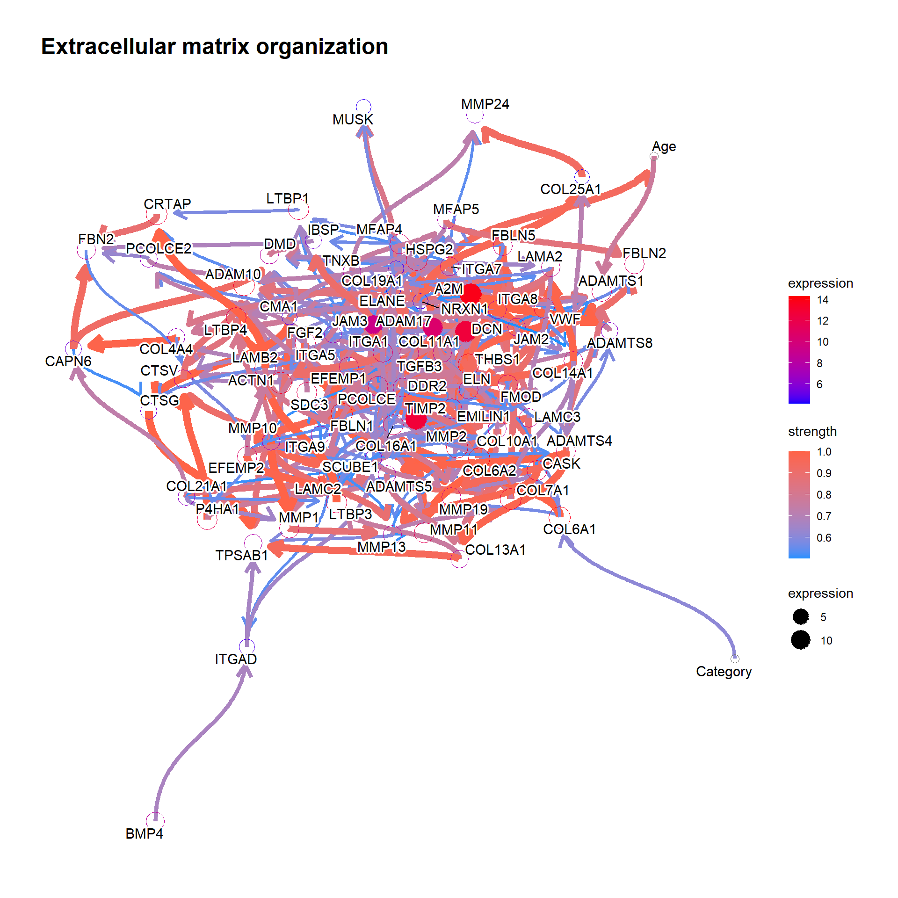
bnGeneCov2Fit <- bn.fit(bnGeneCov2$av, bnGeneCov2$df)Predict the distribution.
candGene <- "MMP2"
mz <- cpdist(bnGeneCov2Fit, nodes=c(candGene), evidence=(Category==0), method="ls")
mo <- cpdist(bnGeneCov2Fit, nodes=c(candGene), evidence=(Category==1), method="ls")
mt <- cpdist(bnGeneCov2Fit, nodes=c(candGene), evidence=(Category==2), method="ls")
effect = data.frame(
val = c(mz[,1], mo[,1], mt[,1]),
stage = c(rep("0",nrow(mz)), rep("1", nrow(mo)), rep("2", nrow(mt)))
)
disMean <- effect %>% group_by(stage) %>% summarise(mean=mean(val))
stageWMean <- paste0(disMean$stage, " (mean=", round(disMean$mean,3), ")")
effect$stageLabel <- c(rep(stageWMean[1],nrow(mz)), rep(stageWMean[2], nrow(mo)), rep(stageWMean[3], nrow(mt)))
ggplot(effect, aes(x=val, y=stage, color=stageLabel, fill=stageLabel)) +
scale_color_manual(values=c("steelblue","gold","tomato")) +
scale_fill_manual(values=c("steelblue","gold","tomato")) +
stat_dotsinterval() + theme_bw() + ggtitle(candGene)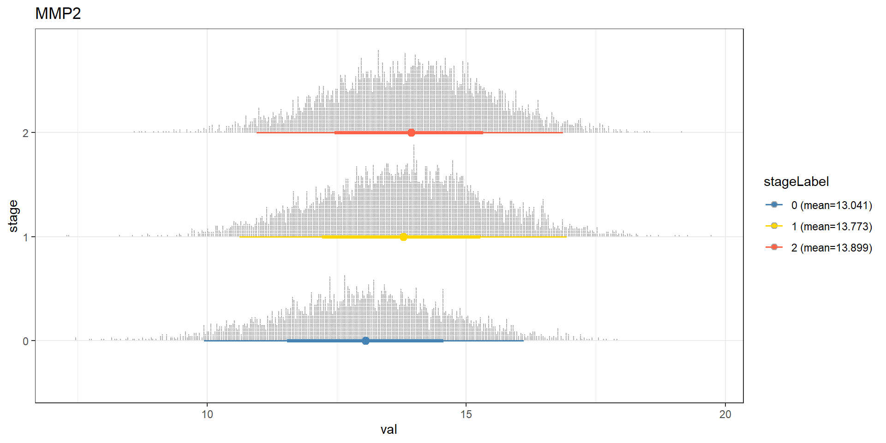
It is interesting to investigate whether the result is similar in the other database, like Gene Ontology doing the same analysis.
## Perform the same analysis on GO enrichment result
pathSubGO <- obtainPath(pwayGO, "MMP2")
pathSubGO@result[1:5, c("Description","geneID","Count")]FALSE Description
FALSE GO:0001968 fibronectin binding
FALSE GO:0004222 metalloendopeptidase activity
FALSE GO:0008237 metallopeptidase activity
FALSE GO:0004252 serine-type endopeptidase activity
FALSE GO:0008236 serine-type peptidase activity
FALSE geneID
FALSE GO:0001968 MYOC/FSTL3/FBLN1/MMP2/CCDC80/VEGFA/CCN2/THBS1/SFRP2/EPHA1/IGFBP6/LRRC15/SSC5D
FALSE GO:0004222 NRDC/MMP2/MMP11/ADAM2/COPS5/NLN/MMP19/MMP24/ADAMTS8/MMP27/MMP13/ADAM10/ECE2/ADAM33/ADAM17/ADAMTS1/ADAMTS5/ADAMTS4/MMP10/ADAMTS20/PAPPA/LMLN/MMP23B/MMP1/TRABD2B
FALSE GO:0008237 NAALAD2/NRDC/MMP2/MMP11/CPQ/ADAM2/PSMD14/COPS5/CPXM2/XPNPEP2/NLN/MMP19/STAMBP/MMP24/CPA4/ADAMTS8/MMP27/MMP13/ADAM10/ECE2/ADAM33/ADAM17/ADAMTS1/ADAMTS5/ADAMTS4/MYSM1/CPA3/MMP10/ADAMTS20/PAPPA/LMLN/MMP23B/MMP1/TRABD2B
FALSE GO:0004252 LTF/MMP2/CMA1/TPSD1/MMP11/ACR/CTSG/GZMH/GZMK/TPSG1/MMP19/PCSK2/F10/MASP1/F12/CTSV/MMP13/C1R/MMP10/KLK6/TPSAB1/C1S/MMP1/TPSB2/GZMM/ELANE/CFD
FALSE GO:0008236 LTF/NAALAD2/MMP2/CMA1/TPSD1/MMP11/ACR/CTSG/GZMH/CPVL/GZMK/TPSG1/MMP19/PCSK2/F10/MASP1/F12/CTSV/MMP13/C1R/MMP10/KLK6/TPSAB1/C1S/MMP1/TPSB2/GZMM/ELANE/CFD
FALSE Count
FALSE GO:0001968 13
FALSE GO:0004222 25
FALSE GO:0008237 34
FALSE GO:0004252 27
FALSE GO:0008236 29num <- 1:2
bnCovGO <- bngeneplot(pathSubGO,
vstedTCGA,
pathNum=num,
algo="hc",
expSample=rownames(metadata),
otherVar=metadata,
R=300, layout="sugiyama",
otherVarName=c("Age","Category"),
cl=parallel::makeCluster(10),
returnNet=TRUE)
bnCovGO$av$nodes$CategoryFALSE $mb
FALSE [1] "CCDC80"
FALSE
FALSE $nbr
FALSE [1] "CCDC80"
FALSE
FALSE $parents
FALSE character(0)
FALSE
FALSE $children
FALSE [1] "CCDC80"bnGeneCovGOFit <- bn.fit(bnCovGO$av, bnCovGO$df)
mz <- cpdist(bnGeneCovGOFit, nodes=c(candGene), evidence=(Category==0), method="ls")
mo <- cpdist(bnGeneCovGOFit, nodes=c(candGene), evidence=(Category==1), method="ls")
mt <- cpdist(bnGeneCovGOFit, nodes=c(candGene), evidence=(Category==2), method="ls")
effect = data.frame(
val = c(mz[,1], mo[,1], mt[,1]),
stage = c(rep("0",nrow(mz)), rep("1", nrow(mo)), rep("2", nrow(mt)))
)
disMean <- effect %>% group_by(stage) %>% summarise(mean=mean(val))
stageWMean <- paste0(disMean$stage, " (mean=", round(disMean$mean,3), ")")
effect$stageLabel <- c(rep(stageWMean[1],nrow(mz)), rep(stageWMean[2], nrow(mo)), rep(stageWMean[3], nrow(mt)))
ggplot(effect, aes(x=val, y=stage, color=stageLabel, fill=stageLabel)) +
scale_color_manual(values=c("steelblue","gold","tomato")) +
scale_fill_manual(values=c("steelblue","gold","tomato")) +
stat_dotsinterval() + theme_bw() + ggtitle(candGene) + labs(caption=paste(pathSubGO@result$Description[num], collapse="\n"))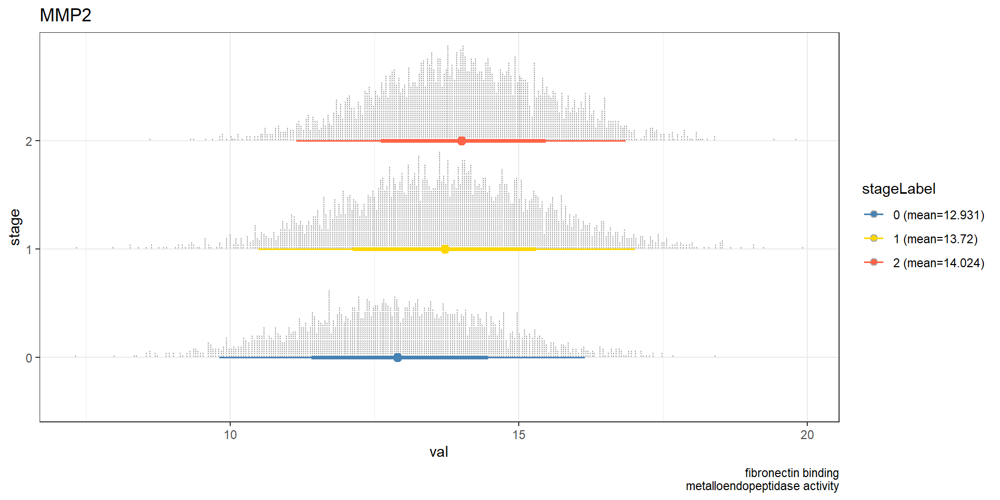
5.6 Investigating the network based on the clinical question
After confirming the knowledge, it is interesting to test how difference in clinical variables affect gene expression. bnlearn can naturally handle this again using cpdist. We now include two more variables, age_at_diagnosis, gender, paper_Noninvasive.bladder.cancer.therapy, paper_Combined.T.and.LN.category. Inference based on these information, we can ask:
Which genes have the biggest expression differences between those treated with BCG and with none, considering the networks of genes and clinical variables of age, gender, tumor category in TCGA-BLCA dataset using genes significantly differed in GSE133624 and involved in curated biological pathways related to MMP2?
## Subset to significant pathways, and those related to MMP2
pway@result <- subset(pway@result, p.adjust<0.05)
pathSub <- obtainPath(pway, "MMP2")
bnCovGene3 <- bngeneplot(pathSub,
vstedBCG,
pathNum = seq_len(nrow(pathSub)),
expSample=rownames(metadata),
otherVar=metadata,
hub=5, R=50,
otherVarName=c("Age","Gender","Therapy","Category"),
cl=parallel::makeCluster(10),
returnNet=T)
bnCovGene3Fit <- bn.fit(bnCovGene3$av, bnCovGene3$df)
allGenes <- names(bnCovGene3$av$nodes)
allGenes <- allGenes[!allGenes %in% c("Age","Gender","Therapy","Category")]
no <- cpdist(bnCovGene3Fit, nodes=allGenes, evidence=(Therapy=="none"), method="ls")
bcg <- cpdist(bnCovGene3Fit, nodes=allGenes, evidence=(Therapy=="Bacillus Calmette.Guerin (BCG)"), method="ls")
difMean <- data.frame(apply(bcg, 2, mean)-apply(no, 2, mean))
difMean$name <- rownames(difMean)
colnames(difMean) <- c("difference","name")
difMean <- difMean[order(abs(difMean$difference), decreasing=T),]
kable(head(difMean, n=5))| difference | name | |
|---|---|---|
| COL25A1 | 0.2344216 | COL25A1 |
| MFAP5 | 0.1834830 | MFAP5 |
| COL11A1 | 0.1494830 | COL11A1 |
| COL10A1 | 0.1381034 | COL10A1 |
| LAMC2 | -0.1340511 | LAMC2 |
5.7 Classification using BN
Inferred BN can be used as a classifier of conditions. In this analysis, we perform the classification of whether the cancer samples are harboring TP53 mutation or not (column paper_mutation in TP53). First, we make a metadata table as same as the above examples.
metadata <- data.frame(tcgaData@colData) %>%
dplyr::select(age_at_diagnosis, gender, paper_mutation.in.TP53, paper_Combined.T.and.LN.category) %>% na.omit() %>%
filter(paper_mutation.in.TP53!="ND") %>%
filter(paper_Combined.T.and.LN.category!="ND")
table(metadata$paper_mutation.in.TP53)FALSE
FALSE no yes
FALSE 184 163## Set TP53 status to numeric of 0/1.
metadata$paper_mutation.in.TP53 <- as.numeric(as.factor(metadata$paper_mutation.in.TP53))-1
metadata$age_at_diagnosis <- as.numeric(scale(metadata$age_at_diagnosis))
metadata$paper_Combined.T.and.LN.category <- as.factor(metadata$paper_Combined.T.and.LN.category)
metadata$gender <- as.factor(metadata$gender)Split the data to train/test according to TP53 mutation status using caret (Kuhn 2008). In this analysis, the five-fold cross validation (stratified) is performed. Fit the model using the expression of genes in the pathway. This time the classification performance of significant pathways (corrected p < 1e-5) are to be compared. onlyDf option can be enabled to return only the data.frame containing data for prediction, useful for testing purpose, and using the resulting data for the other softwares.
set.seed(53) # Seed for split
trainIndex <- caret::createFolds(factor(metadata$paper_mutation.in.TP53), k = 5, list = TRUE, returnTrain=TRUE)
allnets <- list() ## Store network in the list
allClassRes <- list() ## Store prediction in the list
## Already VSTed DF
load("trainDf.rda")
load("testDf.rda")
for (f in seq_len(5)) {
nets <- list()
classRes <- list()
foldTrainIndex <- trainIndex[[f]]
## Recursively fit and test for significant pathways
for (pnum in seq(1, dim(subset(pway@result, p.adjust<1e-5))[1], 1)) {
cl <- parallel::makeCluster(12)
bnCovTrain <- bngeneplot(pway, assay(trainDf[[f]]), pathNum=pnum, layout="sugiyama",
expSample=rownames(metadata[foldTrainIndex,]), algo="hc", strType="normal",
otherVar=metadata[foldTrainIndex,], otherVarName=c("Age","Gender","TP53","Category"),
R=50, cl=cl, returnNet=T)
## Return only DF for testing
bnCovTest <- bngeneplot(pway, assay(testDf[[f]]), pathNum=pnum,
expSample=rownames(metadata[-foldTrainIndex,]),
otherVar=metadata[-foldTrainIndex,], otherVarName=c("Age","Gender","TP53","Category"),
onlyDf=T)
## If DAG and TP53 have parents
if ( igraph::is.dag(bnlearn::as.igraph(bnCovTrain$av)) && length(bnCovTrain$av$nodes$TP53$parents) >= 1 ){
bnCovLargeFit <- bnlearn::bn.fit(bnCovTrain$av, bnCovTrain$df)
pred <- sigmoid::sigmoid(predict(bnCovLargeFit, node="TP53", data=bnCovTest, method = "bayes-lw")) # Use sigmoid function
classRes[[pway@result$Description[pnum]]] <- pred
nets[[pway@result$Description[pnum]]] <- bnCovTrain
} else {
message(paste0("Among pathway ", pway@result$Description[pnum], ", no parent node of TP53 is found, or inferred network is not dag."))
}
parallel::stopCluster(cl)
}
allnets[[f]] <- nets
allClassRes[[f]] <- classRes
}Using the library pROC, calculate the area under ROC (auROC) (Robin et al. 2011).
library(pROC)
library(ggplotify)
rocDf <- c()
allRocList <- list()
for (f in seq_len(5)) {
correct <- metadata[-trainIndex[[f]],]$paper_mutation.in.TP53
predDf <- data.frame(allClassRes[[f]])
predDf$label <- correct
rocList <- list()
for (i in seq_len(dim(predDf)[2]-1)){
rocList[[names(predDf)[i]]] <- roc(predDf$label, predDf[,i], ci=TRUE, direction="<") # check direction
}
tmpRocDf <- data.frame(t(data.frame(purrr::map(rocList, function(x) as.numeric(x$auc)))))
colnames(tmpRocDf) <- c(paste0("auc",f))
tmpRocDf$name <- rownames(tmpRocDf)
allRocList[[f]] <- tmpRocDf
}
allRocListDf <- allRocList %>%
purrr::reduce(left_join, by = "name")
rocMean <- allRocListDf %>%
rowwise() %>%
mutate(Min = min(c_across(starts_with("auc")), na.rm=T),
Max = max(c_across(starts_with("auc")), na.rm=T),
Mean = mean(c_across(starts_with("auc")), na.rm=T),
Sd = sd(c_across(starts_with("auc")), na.rm=T)) %>%
select(name ,Mean, Sd) %>%
arrange(desc(Mean))
kable(rocMean, row.names=FALSE, booktab=TRUE) %>%
kable_styling(font_size = 10)| name | Mean | Sd |
|---|---|---|
| DNA.strand.elongation | 0.7586171 | 0.0476902 |
| S.Phase | 0.7442158 | 0.0417892 |
| RHO.GTPases.Activate.Formins | 0.7361936 | 0.0372955 |
| Activation.of.ATR.in.response.to.replication.stress | 0.7313293 | 0.0309443 |
| Amplification..of.signal.from.unattached..kinetochores.via.a.MAD2..inhibitory.signal | 0.7298620 | 0.0356467 |
| Resolution.of.Sister.Chromatid.Cohesion | 0.7245308 | 0.0627438 |
| Homologous.DNA.Pairing.and.Strand.Exchange | 0.7236192 | 0.0361203 |
| HDR.through.Homologous.Recombination..HRR. | 0.7108159 | 0.0408204 |
| EML4.and.NUDC.in.mitotic.spindle.formation | 0.6847067 | 0.0969711 |
| Mitotic.Spindle.Checkpoint | 0.6727978 | 0.0843631 |
| Separation.of.Sister.Chromatids | 0.5731690 | 0.1567807 |
Show the resulting network with the top auROC, and the ROC plot using pROC (Robin et al. 2011).
topPath <- rocMean[1,"name"]
candFold <- as.numeric(allRocListDf %>% filter(name == as.character(topPath)) %>% summarize(which.max(c_across(starts_with("auc")))))
## With the CI
candRoc <- data.frame(metadata[-trainIndex[[candFold]],]$paper_mutation.in.TP53)
colnames(candRoc) <- c("label")
candRoc$pred <- as.numeric(unlist(allClassRes[[candFold]][gsub("[.]", " ", as.character(topPath))]))
rocobj1 <- plot.roc(candRoc$label, candRoc$pred, print.auc = TRUE, ci=TRUE, col="black", direction="<",
main = "Mutation in TP53", percent=TRUE)
ciobj <- ci.se(rocobj1, specificities = seq(0, 100, 5), progress="none")
plot(ciobj, type = "shape", col = "steelblue")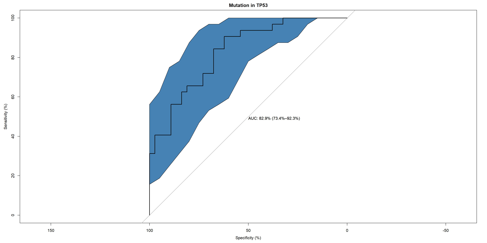
## Along with the network
topNet <- allnets[[candFold]][[gsub("[.]", " ", topPath)]]
topNet$plot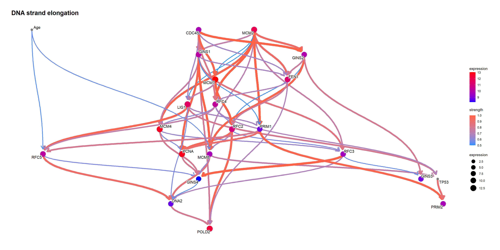
Using bnlearn::cpdist, check the difference in the distribution mean when the value of the node TP53 is above and below 0.5.
topFit <- bnlearn::bn.fit(topNet$av, topNet$df)
candNodes <- names(topNet$av$nodes)
candNodes <- candNodes[!candNodes %in% c("TP53","Category","Gender")]
tp53low <- cpdist(topFit, nodes=candNodes, evidence=(TP53 < 0.5))
dim(tp53low)FALSE [1] 5225 21tp53high <- cpdist(topFit, nodes=candNodes, evidence=(TP53 > 0.5))
dim(tp53high)FALSE [1] 4717 21difMeanTp53 <- apply(tp53high, 2, mean) - apply(tp53low, 2, mean)
kable(head(difMeanTp53[order(abs(difMeanTp53), decreasing=T)]), col.names=c("difference"))| difference | |
|---|---|
| MCM2 | 0.3978904 |
| RFC4 | 0.3534718 |
| MCM8 | 0.3250150 |
| PRIM1 | 0.3243060 |
| PRIM2 | 0.3031842 |
| GINS4 | 0.2868035 |
changeCol <- topNet$plot$data
difMeanTp53 <- difMeanTp53[changeCol$name]
names(difMeanTp53) <- changeCol$name
changeCol$color <- difMeanTp53
## Replace shape and color
topNet$plot$data <- changeCol
topNet$plot + scale_color_continuous(low="blue",high="red",name="difference")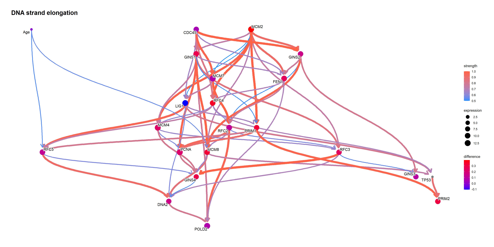
When the TP53 takes the extreme values on logic sampling.
topFit <- bnlearn::bn.fit(topNet$av, topNet$df)
candNodes <- names(topNet$av$nodes)
candNodes <- candNodes[!candNodes %in% c("TP53","Category","Gender")]
tp53low <- cpdist(topFit, nodes=candNodes, evidence=(TP53 < 0.01))
dim(tp53low)FALSE [1] 1760 21tp53high <- cpdist(topFit, nodes=candNodes, evidence=(TP53 > 0.99))
dim(tp53high)FALSE [1] 1552 21difMeanTp53 <- apply(tp53high, 2, mean) - apply(tp53low, 2, mean)
kable(head(difMeanTp53[order(abs(difMeanTp53), decreasing=T)]), col.names=c("difference"))| difference | |
|---|---|
| MCM2 | 0.7375946 |
| RFC4 | 0.6955627 |
| MCM8 | 0.5989058 |
| PRIM1 | 0.5895650 |
| PRIM2 | 0.5783348 |
| GINS1 | 0.4874811 |
changeCol <- topNet$plot$data
difMeanTp53 <- difMeanTp53[changeCol$name]
names(difMeanTp53) <- changeCol$name
changeCol$color <- difMeanTp53
## Replace shape and color
topNet$plot$data <- changeCol
topNet$plot + scale_color_continuous(low="blue",high="red",name="difference")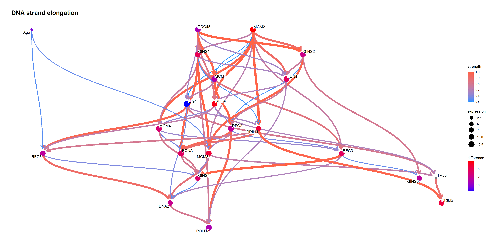
Perform likelihood weighting.
tp53low <- cpdist(topFit, nodes=candNodes, evidence=list(TP53 = 0), method="lw")
tp53high <- cpdist(topFit, nodes=candNodes, evidence=list(TP53 = 1), method="lw")
difMeanTp53 <- apply(tp53high, 2, function(x) weighted.mean(x, attributes(tp53high)$weights)) - apply(tp53low, 2, function(x) weighted.mean(x, attributes(tp53low)$weights))
changeCol <- topNet$plot$data
difMeanTp53 <- difMeanTp53[changeCol$name]
kable(head(difMeanTp53[order(abs(difMeanTp53), decreasing=T)]), col.names=c("difference"))| difference | |
|---|---|
| MCM2 | 0.5113805 |
| RFC4 | 0.4569469 |
| MCM8 | 0.4353333 |
| PRIM1 | 0.4136929 |
| PRIM2 | 0.3935092 |
| GINS1 | 0.3680252 |
names(difMeanTp53) <- changeCol$name
changeCol$color <- difMeanTp53
## Replace shape and color
topNet$plot$data <- changeCol
topNet$plot + scale_color_continuous(low="blue",high="red",name="difference")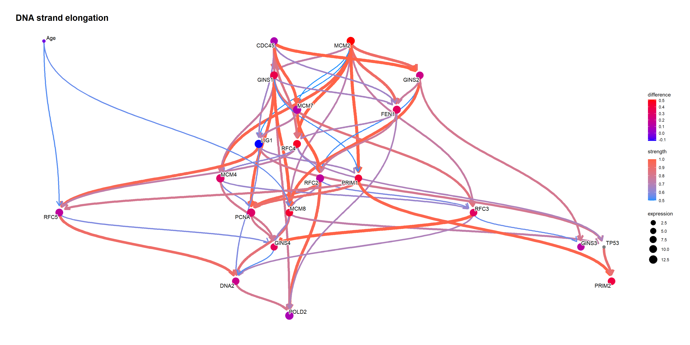
queryCpDistLw function performs sampling by likelihood weighting using cpdist, and returns the data.frame with weights. It just performs cpdist on the queried level and produce a plot. queryCpDistLs performs logic sampling.
## Only likelihood weighting is supported in queryCpDist.
q1 <- queryCpDistLw(topFit, names(difMeanTp53)[1], evidence="TP53", level=c(0,0.5,1))
kable(head(q1$df[,c(names(difMeanTp53)[1],"weights")]))| RFC2 | weights |
|---|---|
| 11.29786 | 0.8774882 |
| 10.16672 | 0.3570390 |
| 10.30900 | 0.2065809 |
| 10.82745 | 0.8837212 |
| 10.36271 | 0.8340634 |
| 10.50688 | 0.7633695 |